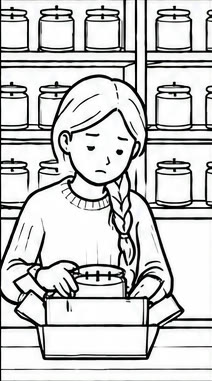
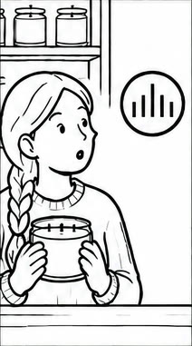
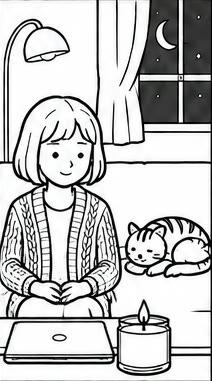
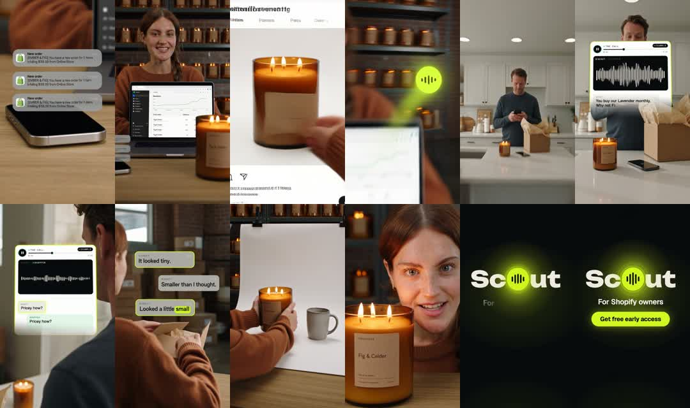
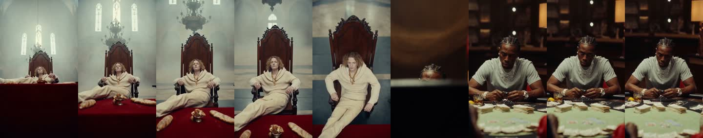

One clean sheet of twelve stick-figure panels carries the whole story: a shopper at night, one question away from buying a candle; the next day the owner from The Dip about to kill it; then Scout says “Don't guess. Ask them.” The drawings set the order and the framing, and the prompt only adds what a pencil can't show: faces, voices, light, sound and the flip.
Why this technique fits this story
It's a two-world story with a clear order. The guide says a storyboard “mainly provides a high-level plot reference” (Task instructions · Unlocked) and lists “Storyboard + subject reference” as a core R2V task (Typical multimodal capabilities). Night sofa → flip → her warm amber studio → Scout is exactly a plot-order job.
Within the guide's limits: 12 panels, under the “15 panels or fewer” rule; simple line art with no text, as the guide recommends (“Use stick-figure or line-art storyboards [recommended]”, “Avoid adding text directly on the storyboard”, Reference asset input recommendations).
The prompt only fills what the drawings can't show (ours is 580 words, down from 756; the compile we send is 900, because sd25-pe gives every subject, room and prop its own role line and names the speaker on every line): each shot is its timestamp, [Panel N], the screen, the sound marks and the line; the only actions written out are the flip, the orb popping in and the cursor gliding onto Add to cart. The guide's 3 steps: map assets, write a story summary, then “at minimum fill in information not shown in the storyboard” (Multi-panel storyboards). sd25-pe's storyboard template adds: give the reading order and say what not to adopt (the sketch style).
Owner bound to her studio. Every owner panel draws the jar shelves, and Image 5 is her one room reference, so the cut back to her feels like The Dip.
Known trade-off: “A multi-panel storyboard will not be followed exactly frame by frame” (Multi-panel storyboards). That's fine here: the beats matter more than exact frames. If Emile wants frame-exact shots, that's the keyframe team.
“Ooh. Fig and Cedar.” · “Okay, this one.” · “Wait. Is it safe for my cat?” · “It doesn't say anywhere.” · “Hm. Guess not.”
Owner, actress 14, in her studio the next day
“Huh. Three this month?” · “I really thought Fig and Cedar would sell.” · “Guess I'm discontinuing it.”
Scout
“Don't guess. Ask them.” · (over the shopper on her sofa) “She was one answer away.” · “Scout interviews your shoppers for you. Get free early access.”
Reference assets, in upload order
Ordered by first appearance (guide FAQ: “Upload reference assets in the order in which the subjects first appear”). Tap a chip in the prompt to jump here.
Provides: Her face, bob with bangs, cream cardigan, her living room at night, lamp, her own small one-wick candle (never the Fig & Cedar jar), grey tabby cat.
Not: Her hands-on-keyboard pose: in this film she uses a mouse on the low table, as Panels 1, 2 and 4 draw.
Soul 2 job c21f0a0f · media 24babbac-5e8d-4e57-8fef-e81f9008d865<image3>
Her laptop screen · Fig & Cedar page
Provides: The Ember & Fig product page, exact words, no pet info anywhere, and the Fig & Cedar jar (its product photo). No cursor in the image: the prompt moves it.
Not: Nothing to leave out: shown as is.
media 527991c0-fa61-4beb-9dd4-e07986925190<image4>
The owner · actress 14 (The Dip)
Provides: Only her face, auburn side braid, rust knit sweater.
Not: The background.
media 1963a66d-94e4-4fdc-95e5-b34fde48ea4f<image5>
Her studio · clean plate from The Dip
Provides: The room for every owner shot: brick wall, amber jar shelves, wooden table, the lit three-wick Fig & Cedar jar, the warm amber light of The Dip.
Not: The empty ceramic dish on the table, or any person. Its laptop screen is blurred in the plate itself, so Image 6 is the only sales screen.
GPT Image 2.6 job 1a812e2e-71a1-4879-8a31-cfb491515ff9 (edit of The Dip at 2.8 s)<image6>
media 8c33aad5-c87b-4b86-965e-1a967b2686d3<image7>
Scout's look
Provides: The lime “o” with five dark sound bars, as a glowing orb.
Not: The wordmark before the last shot.
media af514c1f-638b-492c-9fc3-76df56073a48 (as in The Dip)<video1>
High flip · camera move (5 s)
Provides: Only the move: rise, flip over, land somewhere new. Used at 12–14 s.
Not: Its people, rooms, colours and music (sound stripped).
media 969c55f0-0fa1-4e69-b138-0f171ff227fa · cut from Higgsfield Viral “High flip” 2.5–7.5 s<video2>
End screen · H158 talking “o” (4.5 s)
Provides: Only the last shot's picture: the orb becoming the “o” of the wordmark.
Not: Its sound, words or pacing. Scout's voice comes only from Audio 3.
media cae62718-ec02-41f6-8e36-1de097e8427d<audio1>
Shopper voice · Serene (11.4 s)
Provides: Timbre for her inner voice. The prompt's words win.
Not: Its words or pacing (said in the prompt too).
media 4b121290-c867-44a1-8dc3-6046fb0efb15<audio2>
Owner voice · Alexandra (9.2 s cut)
Provides: Her timbre, as in The Dip. Cut at a pause to fit the guide's 5–10 s sweet spot.
Not: Its words or pacing (said in the prompt too).
media 304653bb-2310-4d21-90d4-c32b92477717 (new 9.2 s cut of 8b4c8a2c)<audio3>
Scout voice · from the H158 end card (4.5 s)
Provides: Only Scout's voice timbre, for every Scout line. The prompt's words win.
Not: Its words or pacing (said in the prompt too).
local a/voice-scout.mp3 (sound of Video 2, split out; upload as Audio 3 at render)
Not in this prompt, on purpose: a ka-ching. Emile's H229 rule pins it as a <ka-ching> sound effect (text only, no audio upload) on the first notification in the opening seconds. This story has no notification and no sale at the start: the shopper leaves with nothing in her cart, and the owner's screen shows a drop. A ka-ching there would tell viewers a sale happened. No chime is tied to the orb either (it gets only <soft pop>). Also not uploaded: a separate jar photo (Image 3 gives the jar's shape, label and three wicks; Image 5 shows it lit on her table).
The prompt to send · sd25-pe compile
896 words. Compiled with ByteDance's own sd25-pe skill (loaded through the Skill tool on Nov 14, after a successful self-update), then re-checked by me: all 11 spoken lines are word for word the same as ours (diffed), the storyboard technique is intact (Image 1 is read panel by panel, each range is tagged [Panel N]), and nothing in it sets ratio, duration or resolution. Saved as prompt-sd25pe-final.txt; the Copy button copies this one.
Generation Goal
Generate a photoreal, warm, full-colour story told in the order of the storyboard. At night a shopper almost buys the Fig & Cedar candle from Ember & Fig, but stops because the product page never says whether it is safe for her cat. The next day the candle-store owner sees it is not selling and decides to discontinue it, until Scout, a glowing lime orb, tells her to ask her shoppers.
Reference Asset Roles
@Image1 provides the shot order and approximate compositions for a 12-panel storyboard grid. Read it from left to right and from top to bottom, one panel per time segment; do not adopt its line-art style, white background or drawn placeholder faces.
The shopper maps to @Image2; use only her face, bob and cardigan; do not copy her hands-on-keyboard pose.
The shopper's living room references @Image2; use its sofa, low table, floor lamp and night light; no people.
The grey tabby cat maps to the cat in @Image2; it is the only cat.
The shopper's small one-wick candle maps to the lit amber candle on the low table in @Image2; it is not the Fig & Cedar jar.
The shopper's laptop screen maps to @Image3; show it as it is.
The owner maps to @Image4; use only her face, braid and sweater; do not use the image background.
The owner's candle studio references @Image5; use its room, shelves and warm amber light for every owner shot; its laptop screen is blurred, so the owner's screen content comes only from @Image6; do not use the empty ceramic dish on the table or any person.
The Fig & Cedar jar maps to the three-wick amber jar: @Image3's product photo gives its shape, label and three wicks; @Image5 gives how it looks lit on the owner's table; they jointly define one jar. There is only one Fig & Cedar jar, and it is only in the owner's studio.
The owner's laptop screen maps to @Image6; show it as it is.
Scout maps to @Image7; use only its look, as a glowing lime orb; do not show the wordmark before the last shot.
@Video1 is used only for the transition's camera movement: rise, flip over, land; do not use its people, rooms, colours or pacing.
Scout's end card maps to @Video2; use only its picture, as the last shot; do not use its sound, words or pacing.
@Audio1 is used for the shopper's voice timbre only; do not use its words or pacing.
@Audio2 is used for the owner's voice timbre only; do not use its words or pacing.
@Audio3 is used for Scout's voice timbre only; do not use its words or pacing.
Shots
0-3s: [Panel 1] At night the small candle flickers by her hand on the mouse <two soft mouse clicks>. Screen: @Image3. In English, the shopper's inner voice (V.O.), lips closed, pleased: {Ooh. Fig and Cedar.}
3-5s: [Panel 2] The cursor glides onto the Add to cart button and hovers there. In English, shopper V.O., lips closed, decided: {Okay, this one.}
5-8s: [Panel 3] The cat is on the sofa back behind her <soft paws>; her eyes go from the cat to the candle. In English, shopper V.O., lips closed, unsure: {Wait. Is it safe for my cat?}
8-10s: [Panel 4] She scrolls; screen: @Image3, no pet information anywhere <mouse-wheel ticks>. In English, shopper V.O., lips closed, flat: {It doesn't say anywhere.}
10-12s: [Panel 5] <a small sigh> In English, shopper V.O., lips closed, letting it go: {Hm. Guess not.} At the end, nothing is in her cart.
12-14s: [Panel 6] At 12s she shuts the laptop lid <soft click>; the camera rises and flips over like @Video1 <whoosh>, landing at 14s in the owner's studio, the next day.
14-16s: [Panel 7] Screen: @Image6. In English, the owner, puzzled: {Huh. Three this month?}
16-19s: [Panel 8] <glass on wood> In English, the owner, deflated: {I really thought Fig and Cedar would sell.}
19-21s: [Panel 9] <kraft mailer rustle> In English, the owner, with a sigh: {Guess I'm discontinuing it.}
21-24s: [Panel 10] Scout's first appearance: the orb pops in beside her shoulder <soft pop>; she turns to it, the jar in her hands, lips closed while it speaks. In English, Scout, calm and warm: {Don't guess. Ask them.}
24-26s: [Panel 11] Hard cut back to that same night: the lamp still on, the laptop closed on the low table, the cat asleep by the candle; the shopper's lips stay closed. In English, Scout off-screen, gentle: {She was one answer away.}
26-30s: [Panel 12] The orb becomes the "o" of the Scout wordmark, as in @Video2. In English, Scout, warm: {Scout interviews your shoppers for you. Get free early access.} At the end, the wordmark holds on screen.
Style and Sound
Hard cuts, except the flip at 12-14s. A new visual every 2-3 seconds, close on hands, faces and candles. Night: lamp and candlelight. Owner shots: daytime, the warm amber light of @Image5. Each line ends inside its shot. (Soft piano at night, lifting to warm music in the studio, low under speech.) No subtitles appear on screen.
Maintain Consistency
Keep the shopper and the owner, their clothing and their rooms separate and stable; only one Fig & Cedar jar, and it is only in the owner's studio; the shopper's small one-wick candle stays in her living room; Scout's lime orb look.
Ours vs ByteDance's optimizer (sd25-pe)
Earlier today the Skill tool couldn't load sd25-pe in a worker session, so the first compile on this page was done by hand. This round the real skill loaded. Both columns carry the same 11 lines, word for word. “Ours” is kept as it was, for comparison only: it still has the two things fix 3 took out of the compile (the “not video editing” line and a two-role Video 2). Send the compile.
Ours · 580 words
【Reference Asset Roles】
@Image1 is a 12-panel line-art storyboard: read it left to right, top to bottom, one panel per time range. Do not adopt its line-art style or drawn faces.
@Image2 is the shopper, her living room at night and her grey tabby cat; do not copy her keyboard pose.
@Image3 is the shopper's laptop screen; show it as it is.
@Image4 is the owner: use only her face, braid and sweater; do not use the background.
@Image5 is the owner's candle studio and its warm amber light, the room for every owner shot; do not use its laptop screen or the empty plate.
@Image6 is the owner's laptop screen; show it as it is.
@Image7 is only Scout's look, a glowing lime orb; no wordmark before the last shot.
@Video1 is only the camera move: rise, flip over, land; do not use its people, rooms, colours or pacing.
@Video2 is the last shot's picture and Scout's voice timbre; do not use its pacing.
@Audio1 is the shopper's voice timbre only; do not use its words or pacing.
@Audio2 is the owner's voice timbre only; do not use its words or pacing.
【Generation Goal】
At night a shopper almost buys a Fig & Cedar candle from Ember & Fig, but stops: the page never says if it is safe for her cat. The next day the owner sees it isn't selling and decides to drop it, until Scout tells her to ask. Photoreal, warm, full colour. Construct the story according to the storyboard sequence. Please note that this is not video editing.
【Shots】
0-3s: [Panel 1] Candle flicker <two soft mouse clicks>. Screen: @Image3.
Shopper (V.O., pleased): {Ooh. Fig and Cedar.}
3-5s: [Panel 2] The cursor glides onto Add to cart and hovers.
Shopper (V.O., decided): {Okay, this one.}
5-8s: [Panel 3] Her eyes go from the cat to the candle <soft paws>.
Shopper (V.O., unsure): {Wait. Is it safe for my cat?}
8-10s: [Panel 4] Screen: @Image3, no pet information <mouse-wheel ticks>.
Shopper (V.O., flat): {It doesn't say anywhere.}
10-12s: [Panel 5] <a small sigh>
Shopper (V.O., letting it go): {Hm. Guess not.}
12-14s: [Panel 6] At 12s the lid shuts <soft click>; the camera rises and flips over like @Video1 <whoosh>, landing at 14s in the owner's studio, the next day.
14-16s: [Panel 7] Screen: @Image6.
Owner (puzzled): {Huh. Three this month?}
16-19s: [Panel 8] <glass on wood>
Owner (deflated): {I really thought Fig and Cedar would sell.}
19-21s: [Panel 9] <kraft mailer rustle>
Owner (with a sigh): {Guess I'm discontinuing it.}
21-24s: [Panel 10] Scout's first appearance: the orb pops in beside her shoulder <soft pop>; she turns to it, jar in hand, lips closed.
Scout (calm, warm): {Don't guess. Ask them.}
24-26s: [Panel 11] Hard cut back to that same night: lamp on, laptop closed, cat asleep by the candle.
Scout (V.O., gentle): {She was one answer away.}
26-30s: [Panel 12] The orb becomes the "o" of the Scout wordmark, as @Video2.
Scout (warm): {Scout interviews your shoppers for you. Get free early access.}
【Style and Sound】
Hard cuts, except the flip at 12-14s. A new visual every 2-3 seconds, close on hands, faces and candles. Night: lamp and candlelight. Owner shots: daytime, the warm amber light of @Image5. The shopper's lines are thoughts; her lips stay closed. Each line ends inside its shot. (Soft piano at night, lifting to warm music in the studio, low under speech.) English dialogue strictly as written. No subtitles.
sd25-pe compile · 896 words · send this one
【Generation Goal】
Generate a photoreal, warm, full-colour story told in the order of the storyboard. At night a shopper almost buys the Fig & Cedar candle from Ember & Fig, but stops because the product page never says whether it is safe for her cat. The next day the candle-store owner sees it is not selling and decides to discontinue it, until Scout, a glowing lime orb, tells her to ask her shoppers.
【Reference Asset Roles】
@Image1 provides the shot order and approximate compositions for a 12-panel storyboard grid. Read it from left to right and from top to bottom, one panel per time segment; do not adopt its line-art style, white background or drawn placeholder faces.
The shopper maps to @Image2; use only her face, bob and cardigan; do not copy her hands-on-keyboard pose.
The shopper's living room references @Image2; use its sofa, low table, floor lamp and night light; no people.
The grey tabby cat maps to the cat in @Image2; it is the only cat.
The shopper's small one-wick candle maps to the lit amber candle on the low table in @Image2; it is not the Fig & Cedar jar.
The shopper's laptop screen maps to @Image3; show it as it is.
The owner maps to @Image4; use only her face, braid and sweater; do not use the image background.
The owner's candle studio references @Image5; use its room, shelves and warm amber light for every owner shot; its laptop screen is blurred, so the owner's screen content comes only from @Image6; do not use the empty ceramic dish on the table or any person.
The Fig & Cedar jar maps to the three-wick amber jar: @Image3's product photo gives its shape, label and three wicks; @Image5 gives how it looks lit on the owner's table; they jointly define one jar. There is only one Fig & Cedar jar, and it is only in the owner's studio.
The owner's laptop screen maps to @Image6; show it as it is.
Scout maps to @Image7; use only its look, as a glowing lime orb; do not show the wordmark before the last shot.
@Video1 is used only for the transition's camera movement: rise, flip over, land; do not use its people, rooms, colours or pacing.
Scout's end card maps to @Video2; use only its picture, as the last shot; do not use its sound, words or pacing.
@Audio1 is used for the shopper's voice timbre only; do not use its words or pacing.
@Audio2 is used for the owner's voice timbre only; do not use its words or pacing.
@Audio3 is used for Scout's voice timbre only; do not use its words or pacing.
【Shots】
0-3s: [Panel 1] At night the small candle flickers by her hand on the mouse <two soft mouse clicks>. Screen: @Image3. In English, the shopper's inner voice (V.O.), lips closed, pleased: {Ooh. Fig and Cedar.}
3-5s: [Panel 2] The cursor glides onto the Add to cart button and hovers there. In English, shopper V.O., lips closed, decided: {Okay, this one.}
5-8s: [Panel 3] The cat is on the sofa back behind her <soft paws>; her eyes go from the cat to the candle. In English, shopper V.O., lips closed, unsure: {Wait. Is it safe for my cat?}
8-10s: [Panel 4] She scrolls; screen: @Image3, no pet information anywhere <mouse-wheel ticks>. In English, shopper V.O., lips closed, flat: {It doesn't say anywhere.}
10-12s: [Panel 5] <a small sigh> In English, shopper V.O., lips closed, letting it go: {Hm. Guess not.} At the end, nothing is in her cart.
12-14s: [Panel 6] At 12s she shuts the laptop lid <soft click>; the camera rises and flips over like @Video1 <whoosh>, landing at 14s in the owner's studio, the next day.
14-16s: [Panel 7] Screen: @Image6. In English, the owner, puzzled: {Huh. Three this month?}
16-19s: [Panel 8] <glass on wood> In English, the owner, deflated: {I really thought Fig and Cedar would sell.}
19-21s: [Panel 9] <kraft mailer rustle> In English, the owner, with a sigh: {Guess I'm discontinuing it.}
21-24s: [Panel 10] Scout's first appearance: the orb pops in beside her shoulder <soft pop>; she turns to it, the jar in her hands, lips closed while it speaks. In English, Scout, calm and warm: {Don't guess. Ask them.}
24-26s: [Panel 11] Hard cut back to that same night: the lamp still on, the laptop closed on the low table, the cat asleep by the candle; the shopper's lips stay closed. In English, Scout off-screen, gentle: {She was one answer away.}
26-30s: [Panel 12] The orb becomes the "o" of the Scout wordmark, as in @Video2. In English, Scout, warm: {Scout interviews your shoppers for you. Get free early access.} At the end, the wordmark holds on screen.
【Style and Sound】
Hard cuts, except the flip at 12-14s. A new visual every 2-3 seconds, close on hands, faces and candles. Night: lamp and candlelight. Owner shots: daytime, the warm amber light of @Image5. Each line ends inside its shot. (Soft piano at night, lifting to warm music in the studio, low under speech.) No subtitles appear on screen.
【Maintain Consistency】
Keep the shopper and the owner, their clothing and their rooms separate and stable; only one Fig & Cedar jar, and it is only in the owner's studio; the shopper's small one-wick candle stays in her living room; Scout's lime orb look.
What the real skill fixed in ours:
Video 2 could have put the wrong words in Scout's mouth. It's the H158 end screen with its own voice track, and ours only said “do not use its pacing”. The skill's rule is that a voice reference gives timbre only, so the line now says “do not use its words or its pacing”.
One “English” for the whole film became one per line. The skill labels each speaker separately (“In English, the owner, puzzled: {…}”) and doesn't use a single blanket line at the end.
The order follows its template: Generation Goal first (no “not video editing” line: this is ordinary storyboard and reference generation with no ratio or duration conflict, so the skill's gate does not trigger). Then one role line per asset, using the guide's storyboard wording for Image 1.
Listeners keep their mouths closed: the owner while Scout speaks at 21–24 s, and now the shopper too at 24–26 s while Scout talks over her shot.
End states where something changes: “nothing is in her cart” at 12 s, and “the wordmark holds on screen” at the end. It also adds a short consistency line: two separate people and rooms, one Fig & Cedar jar, Scout's look.
What I kept from ours on purpose: the pace line and the close framing on hands, faces and candles. These are our own intent, and the skill's first rule (“Intent First”) keeps them. The hand compile had dropped them. I also kept the short role lines: no re-describing of what the references and panels already show (guide: “when a reference is accurate, just say to reference it”), so the 884-word hand version came down to 751 (it is 900 after the two rounds of check fixes: own role lines for the cat, room, candle and jar). I removed the hand version's invented beat where she lifts the jar back out of the box. No 【Unused Assets】 block: all 11 assets have a role.
Fixes after the independent check (H225 fix 1):
One line, one entity. The shopper, her living room and her grey tabby cat each get their own role line from Image 2, as sd25-pe asks (“each line must define only one subject, group, prop, or scene”).
Video 2 has one role. It gives only the last shot's picture; Scout's voice timbre now comes from its own clip, Audio 3 (fix 3).
The jar has a role. Image 3 gives its shape, label and three wicks; Image 5 gives how it looks lit on her table; they jointly define one jar, which is only in the owner's studio. The shopper's own small one-wick candle has its own line (the one in Image 2), so it can't turn into the product.
Assets cleaned so they can't fight the shots. The studio plate's laptop screen is now blurred in the image itself (its old sales table said 129 items and 57%), so Image 6 is the only sales screen. The product page was re-rendered from its source with no cursor, and 3–5 s now says the cursor glides onto Add to cart and hovers.
Which to send: the sd25-pe compile. It has the same story, lines, panels and craft as ours, plus the skill's five fixes and this round's four, and the Video 2 one would have cost a retake. Asset limits are fine: 7 images, 2 videos totalling 9.5 s (each 4 s or longer) and 3 audio clips totalling 25.1 s (limit 30 s).
Owner (deflated): I really thought Fig and Cedar would sell.
—

P9
19–21s
Medium
Slightly high
Locked
Hard cut
Kraft mailer rustle
Owner (sigh): Guess I'm discontinuing it.
—

P10
21–24s
Medium
Eye level
Quick punch-in
Hard cut
Soft pop
Scout: Don't guess. Ask them.
Higgsfield Viral · Eyes in (a5e06af0) for the punch-in on her face; described in words, not fed

P11
24–26s
Medium
Eye level
Locked
Hard cut back to that same night (lamp still on)
Quiet room
Scout V.O.: She was one answer away.
—
P12
26–30s
End screen
Front
Video 2 as is
Orb becomes the “o”
Scout's voice
Scout: Scout interviews your shoppers for you. Get free early access.
—
Pace check: no shot over 3 spoken words a second; the flip gets its own 2 s with no line (judge lesson from H217); only one silent shot.
The special asset: the storyboard sheet
Image 1, v3. GPT Image 2.6, two edit passes on the first sheet (0.25 cr each), each saying “keep panels X exactly, change only Y” (H217 lesson). Still very simple director's thumbnails: dots for eyes, no hatching, no shading, no text or numbers.
What the fix changed: the shopper now lives in one room. P1 is the low table in front of her sofa (laptop, small candle, her hand on a mouse; no desk, no window). P2 puts the laptop and mouse on that table instead of her lap. P4 draws her hand on the mouse, not the trackpad. P11 leaves the closed laptop on the same table. P3 pushes the cat behind her shoulder so it stays background. P9 sets the jar into a kraft mailer box, as in The Dip. Owner panels P7–P10 are untouched and all keep the jar shelves.
Small misses, left on purpose because the guide says panels guide, not dictate: the orb's bars in P10 aren't perfectly symmetric (Image 7 sets the real look), and the faint AI halo around lines remains (the judge called it acceptable); her own candle at home is one-wick on purpose, it isn't the product.
Where The Dip's vibe comes from
The owner's room is a clean plate made from The Dip at 2.8 s (first strip), so the cut to her lands in the same warm, candle-lit brick-and-amber studio. The flip move is cut from Higgsfield's High flip preview (second strip).


Guide calls behind each choice
Panel tags inside timestamps ([Panel N]) tie each range to its drawing: “Fully describe the plot according to the storyboard… You may use timestamps” (Multi-panel storyboards).
Integer seconds, no gaps (Timestamps: “Use 1-second intervals… avoid gaps”).
Each asset says what to take and what not to (tutorial, Prompt rules: “Specify what each asset provides… and what should not be referenced”; sd25-pe §4).
Shopper's inner voice: “(V.O.) … keeps her lips closed”, copied from the guide's own Shot 2 example (FAQ: Incorrect character-to-reference mapping).
Lines as “In English, Character (emotion): {line}”, one language label per speaker (sd25-pe), , never repeated as on-screen words, to avoid subtitles (FAQ: Subtitles generated despite prompt constraints). Music in (), sound effects in <>, dialogue in {} (tutorial, Prompt rules).
Exact screens as images (Images 3 and 6) rather than spelled-out text (FAQ: Text spelling errors, solution 2).
Flip named with trigger time and method (Camera language: “clearly specify both the trigger point and the transition method”), plus a motion-only video ref (Video 1, sound stripped).
Voice refs in the 5–10 s sweet spot where possible (Reference asset input recommendations); voice files give timbre only, the prompt's words win (sd25-pe §4).
Scout described only at his entrance, and the room plate has no orb in it (H217 judge lesson).
Show the cause before the reaction (sd25-pe §1): we see the screen saying nothing about pets before her “Guess not”, and the red 3-units row before the owner's “Huh”.
What could go wrong, and the fix
The model may go its own way on a panel (the guide says it keeps “a degree of autonomy”). Fix with a cheap edit on that stretch (about 3.5 cr/s) rather than a full retake.
The plate's laptop used to show The Dip's analytics screen. It is now blurred in the plate itself (free), so only Image 6's “3 units, −84%” can appear on her screen.
P11 (back to the shopper while Scout says “She was one answer away”) is my addition so the viewer gets the point out loud. It's 2 s; drop it if Emile wants his story exactly as told.
Eval
Round H225 (Nov 14, card brief: “run the final prompt through ByteDance's official sd25-pe skill… Show the compiled prompt next to ours on the page, and say which to send”). I ran the real skill, put the compile beside ours, and recommend sending the compile (see “Ours vs ByteDance's optimizer”). I checked it against marketing-check's Seedance rules. There is one primary task (generation), and the not-editing line is there because the gate applies. Every asset has one role and says what not to take, and there are no unused assets. Dialogue is in {}, with the speaker and English on every line. Music is in (), sound effects in <>, and there are no subtitles. Listeners keep their lips closed. Nothing sets ratio, duration or resolution. Timestamps are whole seconds with no gaps from 0 to 30. The storyboard has 12 panels and no text, with the guide's role wording. Assets are within limits. The 11 spoken lines were diffed against ours and are identical. Spend this round: 0 credits.
Independent check 2 (H225): FAIL. Goal fit yes; the compile and “send this one” are on the card's link.
Emile's feedback
Seedance 2.5 rules
Readable story
Verdict
6
7
8
FAIL
Its 5 fixes, all done (fix 2)
The ka-ching rule (Emile on H229) was weighed and left out, on purpose. The rule: a <ka-ching> sound effect only in the opening seconds, on the first notification, never on the orb. This story opens on a shopper at night who does not buy, and the owner's screen shows a drop, so there is no notification or sale to put it on; a ka-ching would say a sale happened. The orb gets only <soft pop>. The old reason under the assets (“a third audio would push the audio total past 30 s”) was wrong, since a <> effect needs no upload, and is replaced. One question for Emile: keep it out, or open on a ka-ching from another order notification at 0–1 s before the shopper scene?
The shopper's own candle has its own role line: the small one-wick candle on the low table in @Image2, not the Fig & Cedar jar. The jar line and Maintain Consistency now say there is only one Fig & Cedar jar, and it is only in the owner's studio.
The @Image5 line now says “do not use the empty ceramic dish on the table” (not “the empty plate”) and “its laptop screen is blurred”, which matches the image.
The jar line says what each image gives: @Image3 its shape, label and three wicks; @Image5 how it looks lit on her table; together they define one jar.
The shot list no longer lists sounds the prompt doesn't have (candle crackle, purr). The compile is now 900 words; the 11 spoken lines are unchanged.
Independent check 1 (H225): FAIL. Goal fit yes, but the card's link still served the previous round.
Emile's feedback
Seedance 2.5 rules
Readable story
Verdict
6
6
8
FAIL
Its 7 fixes, all done (fix 1)
This page is republished to the card's link, so the link shows the compile, the “send this one” call and a Copy button that copies prompt-sd25pe-final.txt.
The Image 2 line is split into three: the shopper, her living room, her cat.
Video 2 is defined as one entity, Scout's end card (picture plus voice timbre).
The Fig & Cedar jar has its own role line (Image 3's product photo, the same jar in Image 5).
The studio plate's laptop screen is blurred in the image, so its old 129-item table can't leak.
The product page has no baked-in cursor; 3–5 s says the cursor glides onto Add to cart and hovers.
This page now tells one story: the word counts, the Video 2 card and this Eval match the prompt to send. The 11 spoken lines are still identical to ours (diffed by script).
Before (independent judge, round 1):
Goal
Guide
Story
Craft
Overall
6
7
8.5
7
7
Must-fix, and what I changed
Panel 1 (desk, window, mouse) contradicts the sofa world of Panel 2, Panel 11 and Image 2; Panel 4 draws a trackpad while the prompt asks for scroll-wheel ticks. Kept the mouse, since Emile pictured her “holding a mouse” and hearing the clicks. Two edit passes on the sheet: P1 is now the low table in front of her sofa (laptop, small candle, hand on a mouse, no desk or window); P2 moves the laptop from her lap onto that table with the mouse beside it; P4 has her hand on the mouse; P11 leaves the closed laptop on the same table. The prompt says “mouse-wheel ticks”, and Image 2's role line says not to copy her keyboard pose.
The prompt wasn't simplified (756 words, re-describing what the panels draw). Each shot line is now the timestamp, [Panel N], the screen asset, the sound marks and the line. The only actions written out are the ones no panel shows: the cursor going to Add to cart, the flip, the orb popping in, plus the cat-to-candle eyeline for cause before reaction. Now 578 words (the old file also held HTML entities like ', which made it look longer still; prompt.txt is now plain text). That's over the judge's 400 target: the 11 role lines, each with what to take and what not to take, cost about 190 words and both the tutorial and sd25-pe require them.
Bare Image3/Image6/Video1/Video2 labels. Every mention is now @Image3, @Image6, @Video1, @Video2 (checked with grep: zero bare labels).
“Bright warm morning sun” and “sunlit studio” fight the candle-lit Image 5 plate and The Dip's vibe. Both are gone. Owner shots are now “daytime, the warm amber light of @Image5”, and the flip lands “in the owner's studio, the next day”. The Image 5 card no longer says “sunny”.
Not every asset says what not to take. Audio 1 and Audio 2: “use only the voice timbre, do not use its words or pacing”. Image 2: “do not copy her keyboard pose”. Video 2: “do not use its pacing”. Video 1 also excludes pacing now.
Nice-to-have, done
Timeline: P11 is now “Hard cut back to that same night: lamp on, laptop closed, cat asleep by the candle”, so it reads as a flashback, not a glitch.
Cat in P3 redrawn small, behind her shoulder on the sofa back.
Scout's pop gets 3 s (21–24 s, 4 words), the cutback 24–26 s, and the end screen 26–30 s (4 s against Video 2's 4.5 s; 10 words at 2.5 a second).
P9 and the prompt say kraft mailer, as in The Dip.
Not done: trimming Video 1 to 2–3 s (the API would take 2 s for a generation task, but our rules keep each reference video at 4 s or more; cutting 5 s to 4 s gains little, so it stays at 5 s and the prompt now says not to use its pacing), and a softer pass on the line halo (judge: acceptable; another pass risks redrawing the fixed panels).
Spend: 2 GPT Image 2.6 edits (jobs b26b5f38, 1e98a1bf), 0.5 cr. Pitch total 1.0 cr. No video generated. Render still quoted at 90 cr (one draft pass), not submitted.
Verdict (after): all 5 must-fix items are addressed. The shopper's world is one consistent sofa-and-low-table room across P1–P5 and P11, and the owner stays in the amber studio in every panel. The prompt is the simplified storyboard version the guide describes, with exact @ labels and full take/not-take roles. Ready for a re-score; the render waits for Emile's go.
Codex review (H225): FAIL. Preview link refused; the compile kept an untriggered “not video editing” line; Video 2 had two roles.
Its 3 fixes, all done (fix 3)
The preview link is served again and checked at 1440 px and 390 px, with the Copy button and every asset link.
“Please note that this is not video editing.” is gone from the Generation Goal: sd25-pe allows it only when a ratio or duration conflict triggers its gate, and this storyboard generation has none.
Every asset has one role. Video 2 gives only the last shot's picture (not its sound); Scout's voice timbre comes from a new Audio 3, the sound of the H158 end card split out into its own 4.5 s clip.